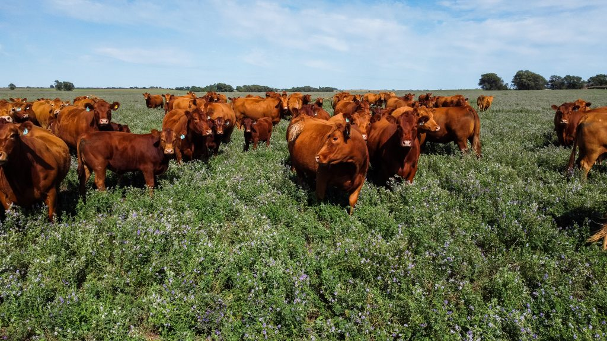
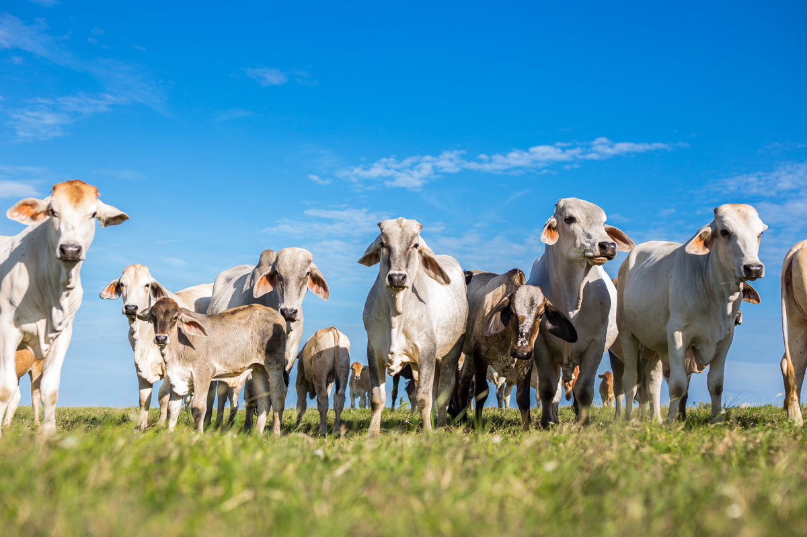
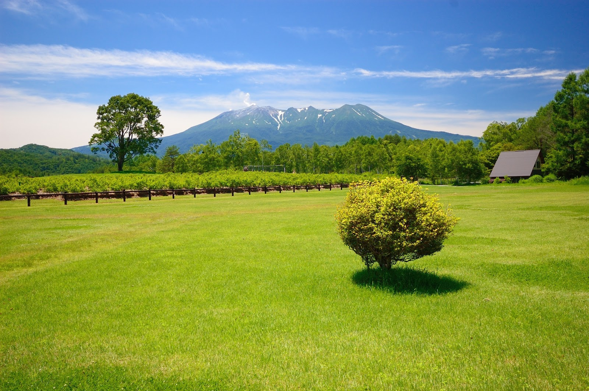
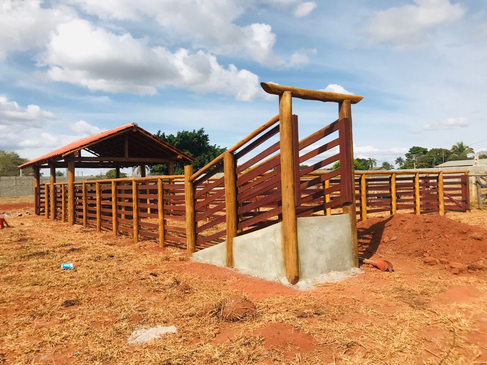
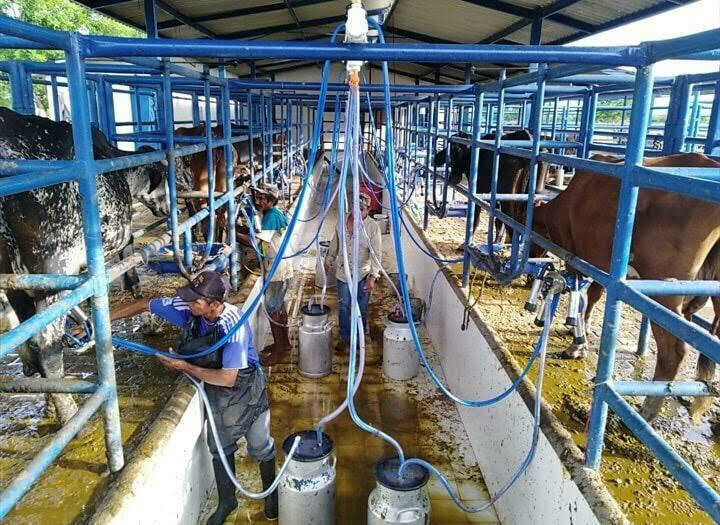
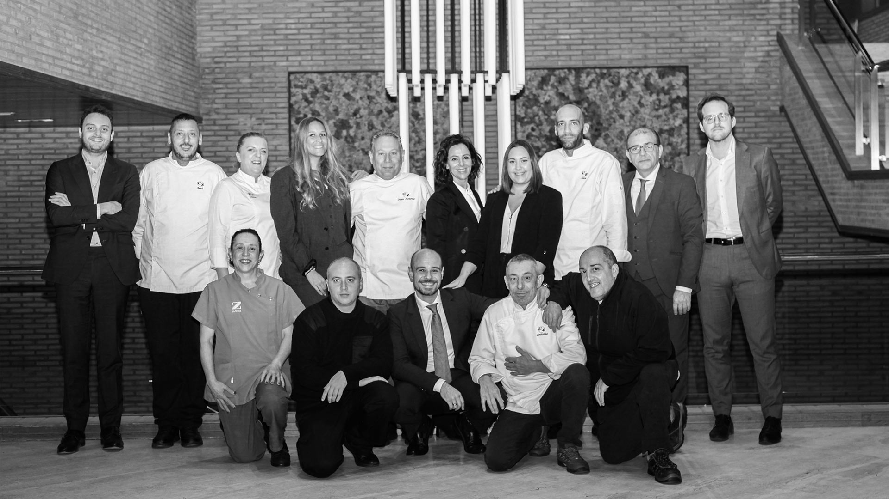

Conoce la historia, la misión y el compromiso que nos han convertido en una finca ganadera reconocida por su calidad y responsabilidad.

Finca Ganadera El Progreso nació como una empresa familiar con el propósito de producir leche y carne bovina mediante prácticas responsables, sostenibles e innovadoras. Desde nuestros inicios hemos trabajado con dedicación para garantizar productos de excelente calidad y contribuir al desarrollo del sector agropecuario.
Gracias al esfuerzo de nuestro equipo y la confianza de nuestros clientes, hoy somos una finca reconocida por el bienestar animal, el compromiso ambiental y la mejora continua de nuestros procesos.
Los principios que guían nuestro trabajo diario y nos impulsan a seguir creciendo con responsabilidad y excelencia.
Producir alimentos de origen bovino con altos estándares de calidad, utilizando procesos sostenibles, innovación constante y un firme compromiso con nuestros clientes y el bienestar animal.
Ser una finca ganadera líder en República Dominicana, reconocida por su excelencia, innovación y compromiso con el desarrollo sostenible del sector agropecuario.
Contamos con un equipo comprometido que trabaja cada día para garantizar la calidad de nuestros productos y el crecimiento sostenible de la finca.
Encargado de dirigir las operaciones y coordinar el crecimiento estratégico de la finca.
Responsable del cuidado animal, salud del ganado y programas de prevención.
Gestiona los procesos administrativos y atención a clientes.
Supervisa las actividades diarias de producción y mantenimiento.
Cada espacio de nuestra finca está diseñado para garantizar el bienestar animal, la calidad de producción y el desarrollo eficiente de nuestras actividades.





Descubre nuestros productos, servicios y el compromiso que nos caracteriza como finca ganadera.